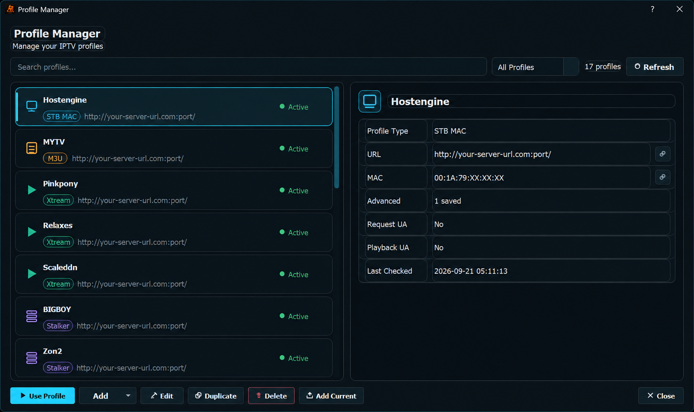
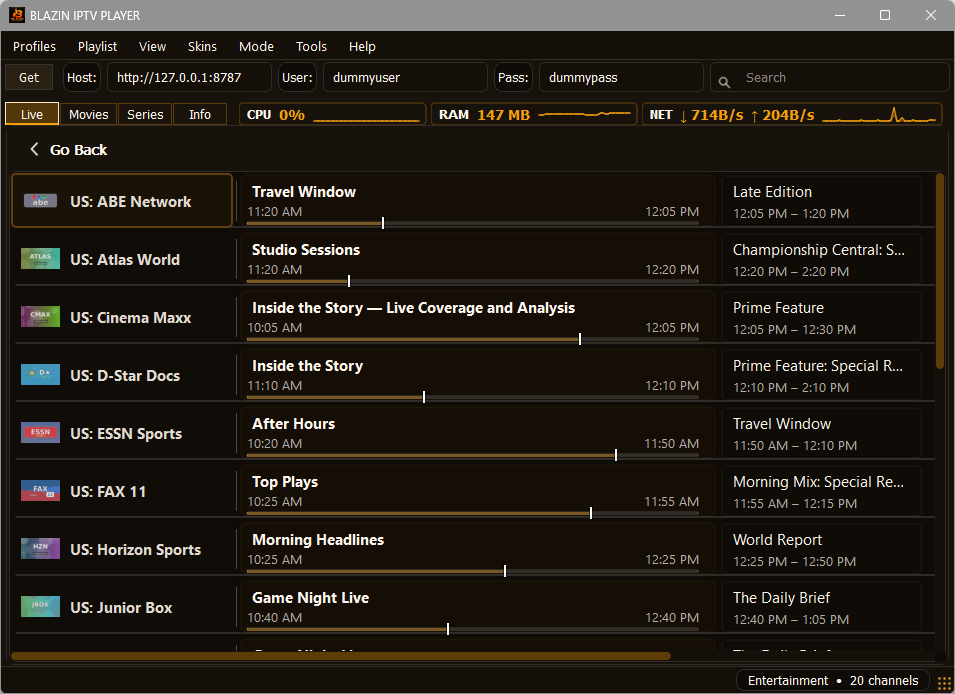
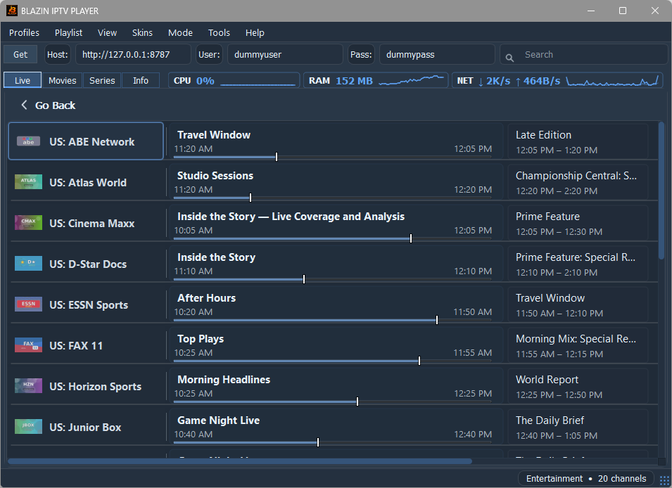
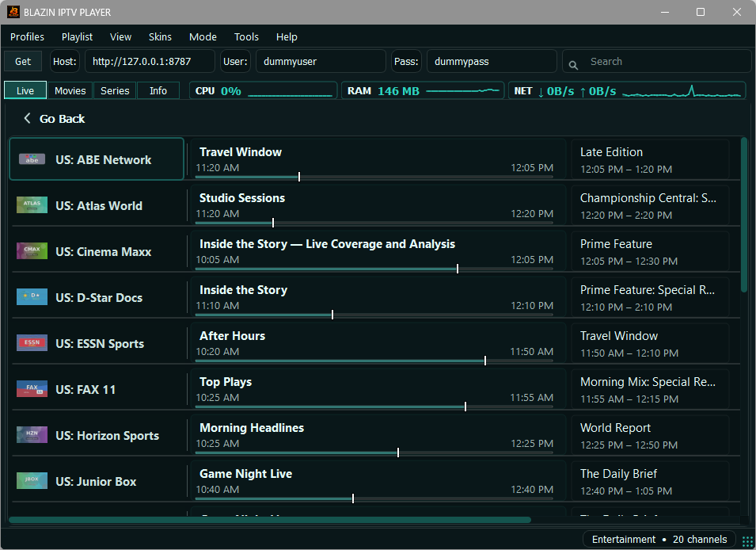

Windows IPTV Player
See how BLAZIN combines M3U, Xtream Codes, STB MAC, Stalker Portal, EPG, search, favorites, and playback on Windows.
Preview the current BLAZIN IPTV Player interface for Live TV, EPG, Movies, Series, Profile Manager, supported profile setup screens, TV Mode, and several built-in themes before starting the 7-day free trial.

Current Live TV category view with search, categories, system monitoring, and Windows desktop controls.

Current Live TV guide view with channel logos, program titles, timing, progress indicators, and upcoming programming when supplied by the source.

Current Movies stacked-card view with poster artwork, descriptions, year, runtime, genre, and ratings when supplied by the source.

Current Series stacked-card view with artwork and source-provided series metadata.

Manage saved M3U, Xtream Codes, STB MAC, and Stalker profiles from one Windows interface.

Configure your own authorized Xtream Codes source with server, username, password, and optional user-agent settings.

Configure an authorized portal and MAC profile, with optional advanced compatibility settings when needed.

A warm dark theme with amber highlights.

A cool blue Windows theme with high-contrast controls and EPG styling.

A dark teal theme for the BLAZIN desktop interface.

Current BLAZIN IPTV Player application information window.

Large-screen Live TV browsing with categories, selected-channel details, playback controls, and an EPG timeline when guide data is supplied by the source.

TV-style Movies browsing with categories, search, poster artwork, selected-title metadata, and playback controls when available from the source.

Large-screen Series browsing with artwork, categories, selected-title details, seasons, and episode navigation when supported by the source.

Built-in VLC-based playback for users who want to watch directly inside BLAZIN.
Explore the current Windows workflow
See how BLAZIN combines M3U, Xtream Codes, STB MAC, Stalker Portal, EPG, search, favorites, and playback on Windows.
Learn how source-provided program information is displayed beside Live TV channels in BLAZIN.
Review the v1.1.18.0 feature set, including profile management, provider handling, Movies and Series browsing, and system monitoring.
7-Day Free Trial
Install from the Microsoft Store, add your own legal playlist or portal details, and test the Windows IPTV workflow before deciding whether it fits your setup.
BLAZIN IPTV Player is player-only software. It does not provide channels, playlists, streams, provider accounts, or copyrighted content.